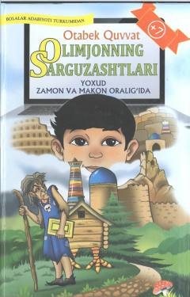

OSOlimjonning ilm va ezgulik yo'lidagi fantastik va sarguzashtlarga boy sarguzashtlari.
Ushbu sarguzasht-fantastik qissada o'n ikki yoshli a'lochi o'quvchi Olimjonning do'stlari Doniyor va Turg'un bilan birga zamon va makon oralig'idagi hayajonli sayohati hikoya qilinadi. Qahramon yovuzlikka qarshi kurashish va sirli kalitni topish yo'lida turli tarixiy hamda fantastik sinovlarni boshdan kechiradi. Asar yoshlarni ilmga intilishga va ezgulikka undaydi.